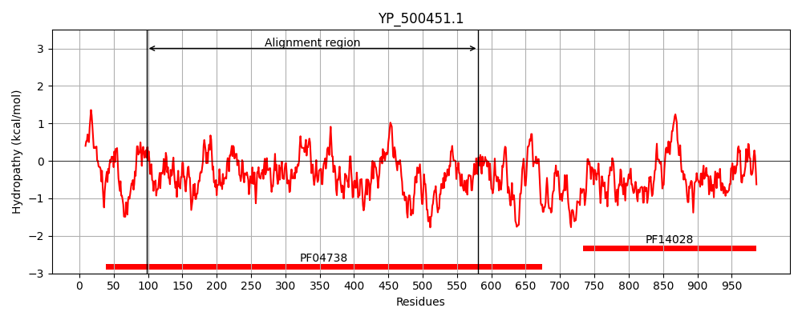
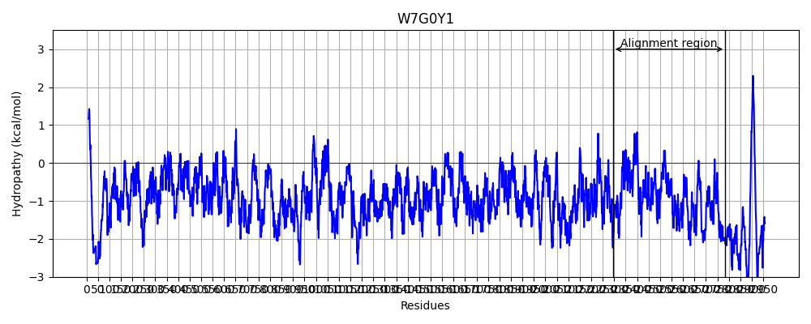
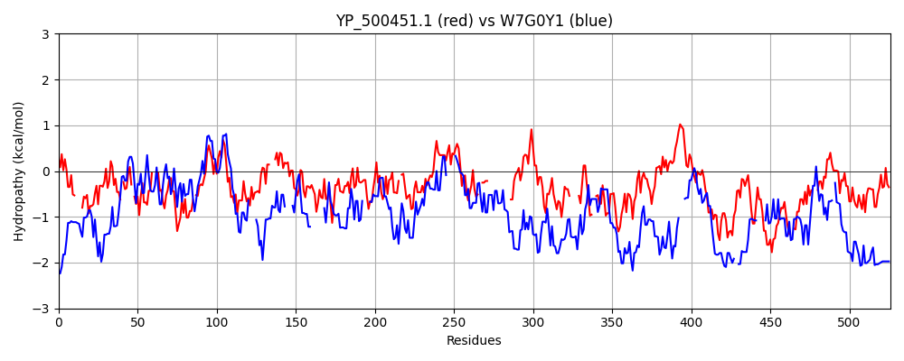

Hit Accession: W7G0Y1
Hit TCID: 1.C.105.2.10
Hit Description: gnl|BL_ORD_ID|20672 gnl|TC-DB|W7G0Y1|1.C.105.2.10 Reticulocyte-binding protein OS=Plasmodium falciparum Santa Lucia GN=PFAG_00579 PE=4 SV=1
Mach Len: 526
e:0.000000
Query TMS Count : 0
Hit TMS Count: 0
TMS-Overlap Score: 0.000000
Predicted Substrates:CHEBI:25367;molecule
BLAST Alignment:
Score: 130 , Bit scores: 54 bits, E-value: 2.5e-07, Alignment length: 526, Percentage identity: 21
Query: 98 NLGHFVNEPTR----LKVGNSIQKYVKVDGEWLYKLVSYI-ESIDEY-YQNLKVIWNSKA---HIINDRIYLNEQSAIYLNNNKDT-SFSIKNSELLVFIKTTVTNNNITFSNLAEKINQEFEINDITKVKVYI---HNLVSKEIIYSTIRPPLSYSDNLNYILNKLSLHNDDFVKKIREIQKLILAYEKTEIGFGEELYKDIIHHMKALFKCKNY-LQIDTKIDMINNYLHQDIATNISEAAYLLWLLSRNNIGFTDLKVLHNRF--IEKY--------------GFEQLVNIKDLISDITGFGTTIFQEEETDGNNIVMLKQ-----KFLHALRNN--DEIVINEKDVESLINDNEINHYHAPMSADVYAELYLGRFYNQYNELIVISPLTASFNAGATFGRFHHLIDTETLAKLEHEKGHYYQKMICDDNVEMISINNIPKYPRNHNVLTNHDSYEYSLN--LGSSNSYSKYEL---TLDDIYVGATFNKLYLYSSQLNKRVLFESNNMYNFLKECNLYRLLR 581
N+ H E + LK+ N QK ++ L ++ + I +SI+++ + N ++ N K II + L+EQ Y N+ + I+ L+ + V N N T + K +E DI K+ YI +N++++E ++ Y NL + DD + I++ Y + EI ++ K I H K L+ + + DT +++IN +++ +I ++ ++ +I +K+ +N+F I+KY + L +KD + + T + +++ N + +++ +++H ++ N + I + + +L+NDN N+ + + L+ F + YN+ +T N F + +DT +E Y+++ D N INNI +N++ +E++L + N + +L +DDI + N Y +LNK+ + ++ + E N + L+
Sbjct: 2295 NINHTYEEKKKSIDILKIKNIKQKNIQEYKNKLEQMNTIINQSIEQHVFINADILQNEKIKLEEIIKNLDILDEQIMTYHNSIDELYKLGIQCDNHLITTISVVVNKNTTKIMIHIKKQKE----DIQKINNYIQTNYNIINEE----ALQFHRLYGHNL--------ISEDDKNNLVHIIKEQKNIYTQKEI----DISKIIKHVKKGLYSLNEHDMNHDTHMNIINEHINNNILQPYTQLINMI-----KDIDNVFIKIQNNKFEQIQKYIEIIKSLEQLNKNINTDNLNKLKDTQNKLINIETEMKHKQKQLINKMNDIEKDNITDQYMHDVQQNIFEPITLKMNEYNTLLNDNHNNNINNEHQFNHLNSLHTKIFSHNYNKEQQQEYIT---NIMQRIDVFINDLDTYQYEYYFYEWNQEYKQI--DKNKINQHINNI-----KNNLIHVKKQFEHTLENIKNNENIFDNIQLKKKDIDDIIININ-NTKETYLKELNKKKMLQNKKKVDEKSEINNHHTLQ 2784 | Protein Hydropathy Plots: |
|---|
|  |  |
Pairwise Alignment-Hydropathy Plot:
|
|---|
|  |